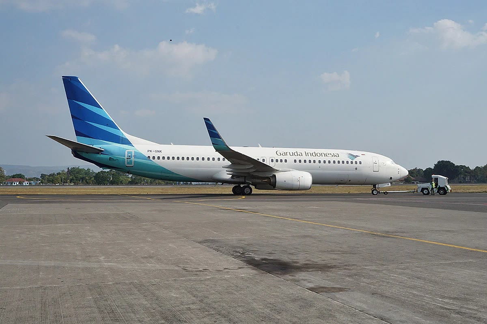

Home
News
A Complete Guide to Preparing for Domestic Travel
A Complete Guide to Preparing for Domestic Travel
A good trip almost always begins long before departure day. Most travel stories that fall apart — a missed flight, an overweight suitcase, arriving after the gate has already closed — start with rushed preparation rather than bad luck. This guide covers the essentials worth settling before you set off to explore destinations within Indonesia, from paperwork to how you behave once you arrive.
Sort out your documents and ID
Carry your original identity card, not just a photo of it. Airlines, intercity trains, and ferries match the name on your ticket against official identification, and a single letter out of place can stop you at the counter. Keep a digital copy on your phone as a backup, and send one to somebody at home too. Travelling with children? Bring a birth certificate or family card, since some operators ask for it to apply the child fare.Book transport early
Flight and train prices in Indonesia move with demand. School holidays, long weekends, and the annual homecoming period are the three peaks you will feel most. Booking a few weeks ahead is generally cheaper and gives you a wider choice of departure times. Also check how long it takes to get from the airport or station to your accommodation — a distance that looks short on a map can take far longer at rush hour.Set a realistic budget
Beyond tickets and lodging, set aside money for entrance fees, local transport, food, and the unexpected. Many attractions outside the big cities still run on cash, especially for parking, toilets, and small food stalls, so do not rely entirely on digital payment. Carrying small denominations will save you a lot of friction.Look after your body
A long overland journey and a gentle hike both demand stamina. Sleep properly before you leave, bring personal medication in its original packaging, and pack simple supplies such as plasters, motion sickness tablets, and hand sanitiser. If you have an existing medical condition, talk your itinerary through with a doctor first.